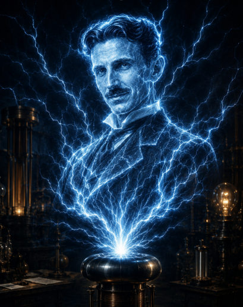

Método científico aplicado
Observar mejor, ordenar evidencias, formular hipótesis, probar soluciones y corregir decisiones.
Ver métodoProfesor en formación continua y docente en ejercicio
Mientras más sabemos, mejor decidimos. Este portal ordena recorridos, proyectos, herramientas y evidencias para orientar decisiones educativas, tecnológicas y creativas.

No es un CV tradicional
La web funciona como estación central: reúne prácticas docentes, servicios digitales, proyectos, herramientas, referentes y producciones. No busca acumular títulos; busca mostrar cómo se observa una situación, se releva información, se ordena evidencia, se prueba una solución y se documenta lo aprendido.
La ciencia ficción aparece como imaginación científica: una forma cultural de proyectar escenarios, anticipar consecuencias y formular mejores preguntas, sin convertir el portal en una fantasía ni en un juego.
Recorrido central
El portal permite leer el trabajo como una red de saberes en formación continua: educación, tecnología, cultura digital, automatización, inteligencia artificial, diseño de materiales y organización de información.
Una red abierta de recorridos, saberes y proyectos en formación continua.
02La orientación como práctica: observar, probar, registrar y mejorar.
03Drive, webs, QR, automatizaciones, IA contextual, difusión y mantenimiento.
04Producciones terminadas, líneas activas y prototipos en espera de desarrollo.
05Materiales impresos, evidencias de aula, producciones y reconocimientos.
06Método científico, pedagogía, pensamiento computacional, divulgación e imaginación científica.
07Sistema interno de curaduría, documentación y criterio para escalar el ecosistema.
Territorios técnicos
Robótica LEGO, Arduino, micro:bit, domótica, sensores, actuadores, impresión 3D, control de accesos, seguridad digital, 2FA, biometría y sistemas de orientación con IA.
Lenguajes y herramientas
C, C++, Python, HTML, CSS, JavaScript, Java, PHP, MySQL, Google Workspace, Apps Script, GitHub, Netlify, ChatGPT, Gemini, Claude, Canva, Genially, CapCut, eXeLearning, Scratch, PSeInt, MakeCode y Tinkercad.
Aula y documentación
Las producciones de aula no son anexos: son evidencia viva de que el aprendizaje toma forma y puede ser observado, documentado y compartido con cuidado ético.
Territorio de formación
El Instituto Normal de Enseñanza Técnica aparece como punto de referencia institucional y formativo, no como oficina personal.